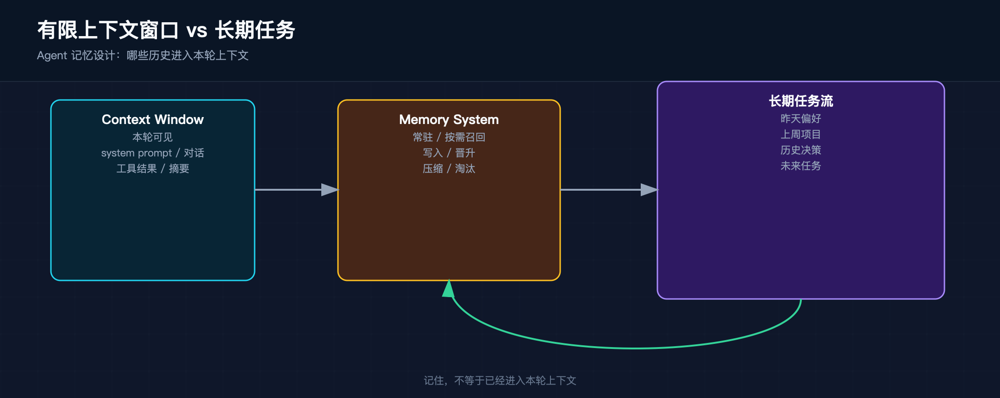
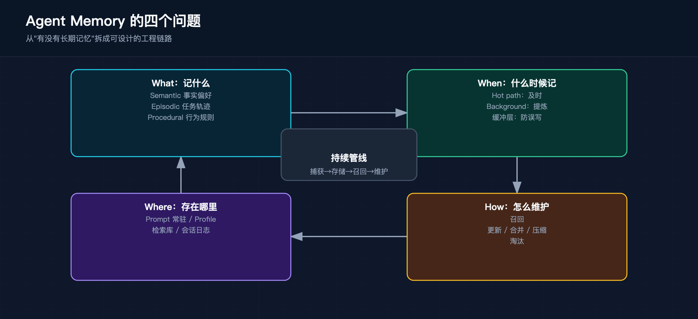
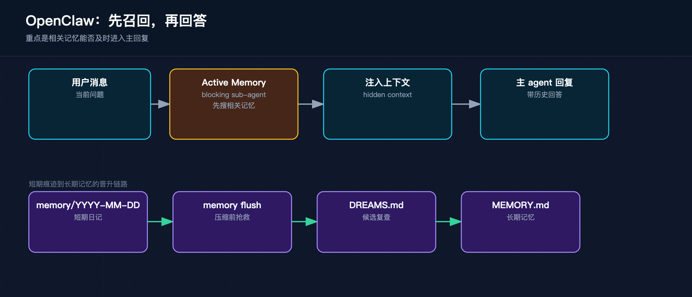
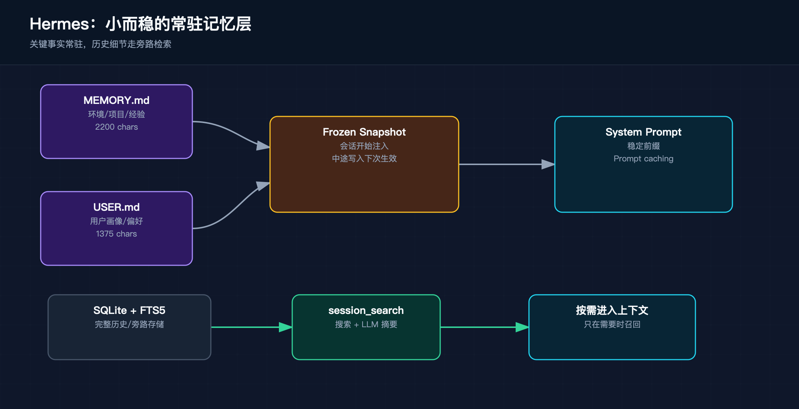
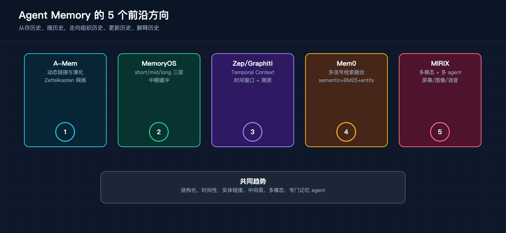

一个 agent 真正露怯的时刻，往往是忘了刚刚和你一起建立过的上下文。
昨天你刚说过更喜欢 TypeScript，今天它又开始往 JavaScript 上带。上周刚一起改过一个项目，这一轮它却像第一次见到这个仓库。直觉上，这叫“没有记忆”。但真要做一个能长期工作的 agent，问题比“加一个 memory store”要麻烦得多。
很多时候，信息已经存下来了，只是没有出现在这一轮模型看到的上下文里。也可能它确实存了，但存得太散，召回太晚，或者压缩时已经被抹平。Agent memory 的难点不只在存储，还在有限的 context window 里安排哪些信息应该常驻，哪些信息应该按需召回，哪些短期痕迹值得提炼成长期知识。
MemGPT 把这个矛盾说得很准：LLM 的上下文窗口是稀缺资源，但任务、对话和协作天然是长时程的。只要 agent 要跨轮工作、跨天延续、跨会话协作，记忆设计就绕不过去。这里要处理的是有限窗口和无限连续性之间的落差。

这两个词如果不拆开，后面几乎所有讨论都会变糊。
Context 是当前这一轮实际送进模型窗口的全部材料。按 OpenClaw 的定义，它包括 system prompt、对话历史、工具调用与返回结果、工作区注入文件、附件，以及 compaction 之后留下的摘要。模型这次能不能答对，先取决于它这次到底看到了什么。
Memory 是另一层东西。它是被保存下来、可以跨轮复用、也可以跨会话恢复的信息。OpenClaw 把这件事说得很直白：模型没有什么神秘的隐藏状态，所谓
remember，本质上就是把信息写到磁盘，然后在之后重新装配回来。Hermes 也是同一路数，只是做法更克制，它把常驻长期记忆压缩成两个很小的块：MEMORY.md
和 USER.md。
最容易混的地方在这里：信息在磁盘上，不等于信息在这一轮 prompt 里。系统可以有很大的长期存储，也可以有很完整的会话历史，但当前上下文没有把它们带回来，模型这一轮还是会像没见过一样。
讨论 Agent 记忆设计，至少要同时看两件事：怎么存，以及这一轮怎么装配。
泛泛地谈短期记忆和长期记忆，很快就会卡住。短期到底是当前对话历史，还是最近几轮工具结果？长期到底是用户画像、项目事实，还是完整会话日志？如果不先拆清楚，后面看任何系统都会变成特性罗列。
更稳的拆法，是用四个问题看一套 Agent memory：记什么，什么时候记，存在哪里，怎么被重新带回当前上下文。这四个问题不是分类游戏，它们分别对应工程里的四个压力点：信息价值判断、写入时机、存储层级、召回与维护策略。任何一个环节没想清楚，memory 都会从“帮助 agent 延续上下文”变成“给 prompt 增加噪声”。

What，记什么，看似最简单，实际最容易失控。LangMem 把记忆内容分成 semantic、episodic、procedural 三类，这个划分很有用。Semantic memory 对应事实、偏好、项目约定、用户画像；episodic memory 对应过去发生过什么，比如任务轨迹、会话摘要、踩坑记录；procedural memory 对应系统应该怎么做事，比如提示词规则、技能、从反馈中沉淀出来的行为准则。一个 agent 说自己有记忆，得先回答它保存的是哪一类东西。
这三类记忆的生命周期不同。用户偏好这类 semantic memory，适合压缩成很短的 profile，每轮都能带上；一次复杂修 bug 的过程，更像 episodic memory，平时不用常驻，遇到相似任务时再搜；某个项目里不要随便改测试、先跑静态检查这类经验，更接近 procedural memory，之后可能会变成规则、skill 或 system prompt 的一部分。把它们都塞进同一个 long-term memory 概念里，写入和召回都会变粗。
很多 memory 系统失败在 What 这一层：该保存的没保存，不该保存的反复写。用户说“这次先用 Python 快速验证一下”，这未必是长期偏好；用户连续几次纠正“这个项目不要 mock 数据库”，这就可能是项目规则。一次性的任务选择、稳定的个人偏好、某个仓库的约定、一次事故后的教训，应该进入不同位置。What 判断错了，后面再好的检索和压缩都只是在处理错误材料。
When，什么时候形成记忆，决定了记忆的实时性和质量。有些信息要在对话进行中立刻写入，因为它马上会影响后面的交互。比如用户刚纠正了称呼、语言偏好、代码风格，这类信息等后台任务慢慢提炼就太晚了。还有些信息适合在后台整理，比如从多天笔记里抽出稳定偏好，或者从长会话里筛出值得保留的经验。LangMem 把这两种方式叫 hot path 和 background，前者强调及时，后者强调质量。
取舍很实际：写入越靠近 hot path，用户越容易感到 agent 记住了刚发生的事，但延迟、误写和工具选择成本也会上来。写入越靠后台，主回复越干净，提炼质量也可能更高，但新记忆生效会变慢。更麻烦的是，hot path 写入通常发生在信息还没稳定的时候，用户临时改口、探索性表达、一次性约束，都可能被过早固化。后台写入可以等更多证据出现，再判断它是不是长期模式。
所以 When 不只是一个性能问题，也是在控制记忆的置信度。可以把记忆形成看成三档：当场生效的临时上下文，短期内可回看的会话/日记记录，经过多次验证后进入长期层的稳定知识。很多系统直接从对话跳到长期记忆，中间缺少缓冲层，后面就容易出现偏好污染和规则冲突。
Where，存在哪里，决定了这条记忆的访问成本和影响范围。有的信息应该常驻在 prompt 前缀里，有的信息适合做成 profile，有的信息应该进入一个可检索集合，还有的信息干脆留在完整的会话历史里，等需要时再搜。不同位置的成本差别很大。常驻 prompt 访问最快，但每轮都付 token 成本；向量库和全文检索容量大，但要承担召回延迟和相关性问题；完整会话日志最保真，却需要额外摘要才能变成可用上下文。
长期记忆不是一个单一仓库，更像几层不同速度、不同容量、不同价格的存储。MemGPT 用 virtual context management 来解释这个问题，方向是对的：有限窗口像高速缓存，外部存储像慢速层，系统要不断决定哪些内容留在近处，哪些内容放到远处，哪些内容只在需要时取回来。
这里有一个容易忽略的点：存储位置会改变记忆的“权力”。写进 system prompt 的内容，几乎每轮都会影响模型；放进检索库的内容，只有被召回时才会影响模型；留在原始日志里的内容，则要先被搜索和摘要处理。很多安全和质量问题来自记忆位置放错了。一个还没验证过的用户画像，如果被写进常驻前缀，就会长期偏置模型；一条很重要的项目约定，如果只留在历史日志里，模型大概率想不起来。
How，怎么召回、更新、压缩、淘汰，这一步最像工程问题。召回是在主回复前发生，还是主 agent 自己想到时再去搜？更新旧记忆时，是覆盖、合并还是追加？压缩是保头保尾裁中间，还是整段重写？容量接近上限时，删什么，留什么，谁来判断？很多系统表面上都叫支持长期记忆，差距往往就在这些细节里。
召回尤其容易被低估。记忆存下来了，只解决了可用性的一半；它能否在合适的时刻进入当前窗口，才决定用户有没有感觉到连续性。被动检索要求主 agent 自己意识到该查记忆，主动召回则让系统在回答前先做一次受限搜索。两种体验差很多，也会带来不同成本：主动召回更像人类对话里的预先想起，但每轮多一次模型调用或检索；被动检索更省，却容易错过时机。
更新和淘汰也一样关键。长期记忆如果只追加，很快会堆出冲突和噪声；如果过度覆盖，又会丢掉有用的历史。用户偏好尤其麻烦，它会变化，也会带条件。用户今天说喜欢简短回答，明天又在某类研究任务里要求展开分析，系统不能只保留新近那句，也不能把两句都当作无条件规则。好的 memory 设计需要记录范围、证据、时间和适用场景。
压缩连接短期和长期。长会话里的旧工具结果、旧推理过程、阶段性决策，不可能原样留在窗口里。压缩要保住任务目标、约束、关键文件、当前状态和下一步，同时删掉重复输出和低价值细节。压缩质量不好，agent 会继续说话，却已经失去任务的连续性。
把这四个问题连起来看，Agent memory 更像一条持续运行的管线：从对话里捕获候选信息，放进合适的存储层，在合适时机召回，再随着新证据不断合并、降权或删除。带着这个框架看 OpenClaw 和 Hermes，就不会只是在比功能表。它们都在回答同一组问题，只是重心不同：OpenClaw 更强调记忆在回复前及时浮现，Hermes 更强调常驻上下文的小而稳。
OpenClaw 很适合拿来讲一种更积极的记忆路线。它不满足于把内容存进文件，再等主 agent 想起来时去查。它的设计重心更靠前：在主回复生成之前，先给系统一次受限的回忆机会。
先看它的底层材料。OpenClaw 把记忆放在工作区里的 Markdown 文件中，MEMORY.md
放长期稳定记忆，memory/YYYY-MM-DD.md
放日记式短期笔记，DREAMS.md
承接 dreaming 和回放整理后的结果。这个结构把三种东西分开了：长期事实、近期流水、待复查的晋升候选。日记文件保留短期语境，MEMORY.md
保留高信号结论，DREAMS.md
给人和系统一个中间审核区。
这套文件结构还有一个好处：memory substrate 很朴素。记忆以普通文件暴露出来，不藏在黑盒服务里，也不强绑定某个数据库。用户和 agent 都能读到这些文件，必要时可以直接审查、删改、回滚。这种透明性对 personal agent 很重要，因为长期记忆一旦写错，影响的是后面很多轮交互。
OpenClaw 的 Active Memory 是这一节的重点。很多 agent 有记忆检索工具，但检索动作依赖主 agent 自己触发。问题在于，主 agent 开始回答时通常已经带着当前窗口里的信息往前走了，如果它没意识到应该查历史，后面的回答就会沿着缺信息的路径展开。OpenClaw 把这一步提前：符合条件的会话里，先运行一个 plugin-owned 的 blocking memory sub-agent，由它调用可用的 memory recall 工具，生成一段精简结果，再把这段结果作为隐藏的 untrusted context 注入主回复。
这个做法解决的是时机问题。用户问我该点什么鸡翅时，系统如果能在主回复前想起用户之前偏好 lemon pepper wings with blue cheese，回答会自然很多。等主 agent 回答完再想起这件事，记忆系统再完整也没用。OpenClaw 文档里给 Active Memory 设了多道门：插件启用、agent 命中、会话类型允许、当前会话是可持久化的交互式聊天。默认只对 direct session 开启，主动召回的成本只花在最可能产生体验收益的场景里。
Active Memory 还有几个小细节值得看。它的 transcript 默认是临时的，跑完就删，避免把召回过程本身变成新噪声。它可以配独立的低延迟模型，因为召回任务的工具面很窄，质量要够用，速度更敏感。它还会把调试信息和注入主 prompt 的内容分开，用户看到的是简短诊断，主模型看到的是隐藏上下文。这里的取舍很工程化：召回要早，但不能把主链路拖得太重；记忆要进 prompt，但不能让用户界面充满内部标记。
再看写入和晋升。OpenClaw 在 compaction 前会跑 memory flush，提醒 agent 先把重要上下文写进 memory 文件，再让摘要压缩旧对话。这个动作很关键，因为压缩一旦发生，原始上下文就会被折叠，没写下来的事实很可能只剩模糊摘要。memory flush 像一次压缩前的抢救，把可持久化的信息先从短期窗口里捞出来。
Dreaming 则处理另一类问题：短期笔记里有很多东西当下看起来有用，但不一定都值得进入长期记忆。OpenClaw 的 dreaming
会收集短期信号，按分数、召回频率、查询多样性这些门槛筛选，只让合格候选晋升进 MEMORY.md。grounded
backfill 负责从历史 daily notes 里回放，把旧笔记重新评估一遍。这样形成长期记忆时，就多了一条带审核和晋升的流水线。
如果把 OpenClaw 拆回前面的四个问题：What 上，区分长期事实、日记信号和 dreaming 候选；When 上，把主动召回放在回复前，把晋升放到后台；Where 上，用 Markdown 文件、搜索索引和可选 wiki 层共同承载；How 上，通过 Active Memory、memory flush、dreaming、backfill 把捕获、召回、压缩前抢救和长期晋升连起来。它更像一个记忆编排器，核心问题是记忆能否及时进入工作流。

Hermes 的重心不同。它的内置记忆层很小，MEMORY.md
只有 2200 个字符，USER.md
只有 1375 个字符。这给常驻上下文设了硬边界：每轮都带上的内容必须短、密、稳定。
MEMORY.md
和 USER.md
的分工也很明确。前者记录 agent 需要知道的环境、项目约定、工具经验和工作流事实，后者记录用户画像、沟通偏好、技术背景和协作习惯。Hermes
让 agent 通过 memory tool 做 add、replace、remove，不提供 read action，因为 memory 会在 session 开始时自动注入 system
prompt。容量接近上限时，agent 要先合并或替换旧条目，再写新条目。这套机制强迫 agent 做压缩判断，长期记忆不能变成流水账。
Hermes 最关键的取舍是 frozen snapshot。session 开始时，磁盘上的记忆会被渲染进 system prompt；session 中途即使写入新记忆，也只会落盘，不会改当前 system prompt。这个设计牺牲了一点实时性，但换来两个收益：system prompt 不在会话中途抖动，Anthropic prompt caching 的前缀命中也更稳。对一个长时间运行、跨 CLI 和消息平台工作的 agent 来说，这种稳定性很值钱。
它对记忆安全也更敏感。Hermes 文档里提到，记忆条目写入前会扫 prompt injection、凭证外泄、SSH 后门、不可见 Unicode 这类风险，因为这些条目之后会进入 system prompt。只要一条恶意记忆被常驻注入，后续每一轮都可能受影响。长期记忆的权限比普通聊天内容高得多，所以它的写入入口必须更谨慎。
Hermes 没有试图让这两个小文件承担所有历史召回。它把常驻记忆和 session search 分开：关键事实始终在 prompt 里，历史细节留在 SQLite 会话库里，用 FTS5 搜索，再交给 LLM 摘要。这样做的分层很清楚。常驻层负责高频、低容量、必须每轮可见的信息；session search 负责低频、大容量、需要时再拉回来的历史上下文。
这个分层解决了一个常见问题：用户问我们上周那个 bug 后来怎么处理的，不应该把上周整段会话长期塞在 prompt 里；但如果系统完全不存历史，也没法回答。Hermes 选择把完整历史留在旁路，用搜索和摘要把它临时变成当前上下文。常驻记忆保持小，历史能力通过检索补上。
External memory providers 又是下一层。Hermes 内置记忆负责最核心的常驻前缀，外部 provider 负责更深的 semantic search、知识图谱、自动事实提取、跨会话用户建模。它们和 built-in memory 并行工作，不替换内置记忆。这个说法很重要：Hermes 没有把所有记忆能力收进一个中心系统。稳定前缀、会话搜索、外部长期记忆被拆成几条并行通道，各自处理不同容量和延迟的需求。
用前面四个问题看 Hermes：What 上，只让最高信号的环境事实和用户偏好常驻；When 上，写入可以发生在当前 session，但生效到 system prompt 要等下一次 snapshot；Where 上，小文件承载常驻层，SQLite 承载完整会话历史，provider 承载更大的外部记忆；How 上，用容量限制、替换合并、安全扫描、FTS5 搜索、LLM 摘要和 prompt caching 共同控制成本。Hermes 关心的是让常驻上下文长期稳定，同时保留按需追溯历史的能力。

Hermes 的 context compression 值得单独讲，因为它正好暴露出一个常见误区：很多人把 memory 和 compression 分开看，一个负责存，一个负责省 token。实际在 agent 里，这两件事经常缠在一起。
对长任务来说，压缩不只是为了便宜，也是在维护任务还能不能继续。Hermes 的 compressor 会先裁掉旧的 tool output，再保留开头固定区和最近一段 tail，把中间地带总结成结构化摘要。连续压缩时，它会在上一份 summary 上继续更新，避免每次重写一份全新摘要。这套机制干的是短期记忆管理：保住任务目标、约束、关键文件、未完成工作，让系统跨过上下文窗口限制，还能保持工作连续性。
Prompt caching 又把这个问题推得更明确。既然 system prompt 和稳定前缀会直接影响缓存命中，memory architecture 本身就会反过来被缓存策略塑形。Hermes 的 frozen snapshot 不是孤立选择，它和压缩、会话存储、缓存策略是一套连起来的设计。
MemGPT 用 virtual context management 去解释这件事，其实很贴切。对 agent 来说，压缩、检索、常驻前缀、历史搜索，都是在做上下文的分层管理。名字看上去不一样，处理的是同一个矛盾：窗口有限，任务很长。
如果只做功能对照表，很容易把 OpenClaw 和 Hermes 写成这个支持主动召回，那个支持会话检索，读起来只剩一串特性罗列。更值得写的是它们各自在优化什么。
OpenClaw 更像一个记忆编排器。它强调 recall timing，强调短期痕迹怎么晋升成长时知识，强调 memory layer 之间的流动关系。它关心的是相关记忆能不能在正确时刻浮现，系统能不能在不打断用户的情况下先替自己回忆一次。
Hermes 更像受控常驻层加按需检索层。它强调稳定前缀，强调 prompt caching 的收益，强调压缩和历史搜索怎么配合。它关心的是常驻上下文能不能长期稳定，系统能不能在不把 prompt 弄得越来越重的前提下保住关键事实。
两条路线都成立，也都很有代表性。放在 personal agent 场景里，OpenClaw 的主动召回很有吸引力，因为它更像人在说话前先想起对方的偏好。放在工具型 agent、长任务型 agent 里，Hermes 那种小而硬的常驻层也很有价值，因为它更容易把成本、性能和稳定性控住。
它们不是强弱关系，更像两个不同的优化目标：一个在优化记忆的及时性，一个在优化上下文的稳定性。
看完 OpenClaw 和 Hermes，再看 2025 年之后的新实现，会更容易看出这条线怎么往前走。新的系统已经不满足于向量库加摘要，也不只是在问怎么把历史对话搜回来。它们开始改 memory 的组织方式、更新方式、时间表达和检索粒度。
一个方向是让记忆自己长出连接关系，A-Mem 借了 Zettelkasten 的思路，新记忆进入系统时，不只是写一条记录，还会生成 contextual description、keywords、tags，再回看历史记忆，给相似或相关内容建立链接。更重要的是，新记忆会触发旧记忆的表示更新，让记忆网络随着新信息进入而演化。memory 从 append-only 的条目集合，变成了会持续重组的知识网络。
第二个方向是把 memory 当成操作系统一样管理，MemoryOS 直接沿着 MemGPT 的系统软件类比往前走，把存储分成 short-term、mid-term、long-term personal memory 三层，再用 Storage、Updating、Retrieval、Generation 四个模块管理。短期到中期，用 dialogue-chain-based FIFO；中期到长期，用 segmented page organization。这个思路的重点，是在短期流水和长期画像之间加一个中间层。很多系统从当前对话直接跳到长期记忆，MemoryOS 则强调中期缓冲和分段组织。
第三个方向是时间感更强的知识图谱，Zep / Graphiti 把 agent memory 做成 temporal context graph：实体、关系、事实都有时间窗口，旧事实被 supersede 时不会直接删除，而是保留历史有效期；每个派生事实还能追溯到原始 episode。它处理的是用户偏好、组织关系、业务事实会变化的问题。传统 RAG 更像静态文档检索，Graphiti 更像在维护一个会随交互变化的世界模型，而且能回答现在是什么关系和当时是什么关系这两类问题。
第四个方向是生产化的多信号检索，Mem0 的新算法走的是工程效率路线：single-pass ADD-only extraction，不做 UPDATE / DELETE；agent 确认过的行为也作为一等事实写入；实体会被抽取、嵌入并跨记忆链接；检索时把 semantic、BM25 keyword、entity matching 并行打分再融合。它优先解决生产环境里的低延迟、低 token 成本和长期一致性，理论形态反倒放在后面。
第五个方向是多模态和多 agent 分工，MIRIX 把记忆拆成 Core、Episodic、Semantic、Procedural、Resource、Knowledge Vault 六类，并用多个专门 agent 去管理更新和检索。它还把屏幕活动、图像、语音这类多模态输入纳入长期记忆。这个方向很适合 personal assistant：很多真实记忆不来自聊天文本，而来自用户看过什么、做过什么、屏幕上发生了什么。
这些实现放在一起，能看到一个很明显的趋势：Agent memory 正在从存历史、搜历史，走向组织历史、更新历史、解释历史。结构化、时间性、实体链接、中间层、多模态、专门记忆 agent，都会成为更常见的设计元素。OpenClaw 和 Hermes 可以放在这个趋势里看：前者强调记忆何时进入主回复，后者强调常驻上下文如何保持稳定；A-Mem、MemoryOS、Graphiti、Mem0、MIRIX 则分别把组织、分层、时间、生产检索和多模态推得更远。

如果只看 OpenClaw 和 Hermes，很容易把文章写成两个项目的经验总结。把 MemGPT、CoALA、LangMem 放进来，视角会稳很多。
MemGPT 补上的是底层解释：为什么 memory 必须分层。它把 context window 看成稀缺资源，把更长的任务看成对 virtual context management 的需求。这给工程实现提供了一个很自然的类比：像操作系统管理内存那样管理上下文。
CoALA 补上的是认知架构视角。它提醒我们，记忆不只是一个数据库挂件，也和 action space、decision process 连在一起。Agent 的记忆设计，最终会影响它怎么行动、怎么决策、怎么和外部环境交互。
LangMem 补上的是工程问题清单。记什么，什么时候形成，存在哪，怎么更新，怎么检索；用 profile 还是 collection，做 hot path 还是 background。系统要落地，就会回到这些具体问题上。
这几套框架帮我们把 Agent memory 从一个模糊卖点，拆成一组可以设计、可以权衡、也可以比较的工程问题。
Agent 记忆设计，归根结底不是在系统里多接一个 memory store，也不是把向量数据库接上就算完成。难的地方，是在有限上下文里分配注意力：什么该常驻，什么该按需召回，什么该被压缩，什么该被遗忘，什么短期痕迹值得晋升成长期知识。
OpenClaw 和 Hermes 都很有代表性。两者都承认 context window 有边界，也都承认单轮对话不足以支撑一个长期工作的 agent。分歧主要在取舍：是把重点放在记忆能否及时浮现，还是放在常驻上下文能否长期稳定。
下一代 Agent memory 值得看的地方，恐怕也不会只是存得更大。更有意思的进展，大概会发生在触发策略、压缩质量、召回编排，以及记忆层之间的协同上。到那时，有记忆的 agent 也许不再意味着它背后有多大的库，而是它能不能在正确时刻，把对当前任务最有帮助的历史带回来。